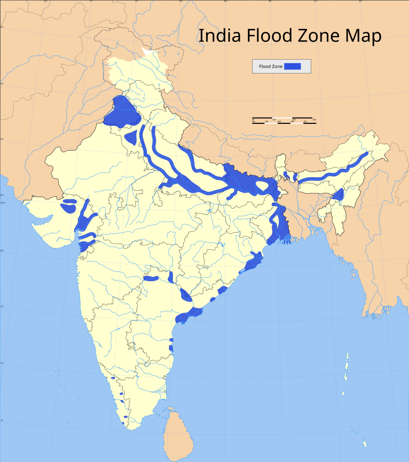

High FLood Prone Areas Map
Welcome to our High Flood-Prone Areas Map page. This resource is designed to help you understand the risks associated with flooding in your area and to promote preparedness among residents and local communities.
Overwiev: Flooding can occur in any region, often unexpectedly, due to heavy rainfall, rapid snowmelt, or severe storms. Certain areas are more susceptible to flooding, and understanding these high-risk zones is crucial for safety and preparedness.
-
Key Features
Interactive Map: Explore our detailed map highlighting high flood-prone areas, allowing you to identify risks in your neighborhood.
Flood Zones:
- Coastal Areas: Vulnerable to storm surges and rising sea levels.
- River Floodplains: Areas adjacent to rivers that can overflow during heavy rainfall or snowmelt.
- Urban Areas: Cities with poor drainage systems that can lead to flash floods during heavy storms.
- Low-Lying Regions: Areas with elevations below sea level or adjacent to lakes and ponds.
- Areas with Poor Drainage: Locations where water cannot easily flow away, increasing flood risk during heavy rains.
-
Flood Insurance:
Understand the importance of flood insurance, especially for properties in high-risk zones. Even those in moderate or low-risk areas should consider coverage due to unpredictable flood events. -
Community Resources
Access local floodplain management resources, emergency preparedness guides, and contact information for local authorities. -
Mitigation Strategies
Discover tips for reducing flood risk, such as elevating structures and maintaining drainage systems. -
Updates and ALerts
Stay informed about the latest flood risk assessments, changes in flood zone designations, and community alerts regarding potential flooding events.
By utilizing this map and the accompanying resources, you can take proactive steps to protect yourself, your family, and your property from the dangers of flooding. Stay informed, stay prepared, and help create a safer community for everyone.